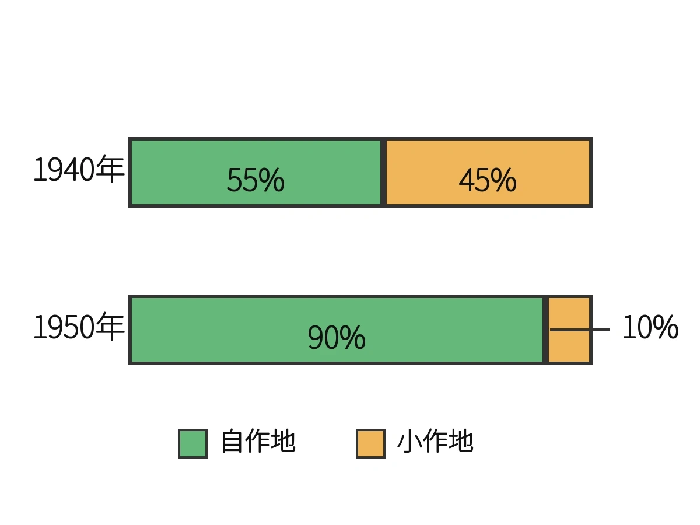

歴史 ⑰ 問題集 Web版
占領と日本国憲法
GHQ占領 〜 日本国憲法制定
 いっしょに がんばろう！
いっしょに がんばろう！タブか下のリストから選んで、1問ずつ解いていこう！
要点まとめ → 一問一答 → 4択 → 記述の順で力がつくよ。
要点まとめ → 一問一答 → 4択 → 記述の順で力がつくよ。
年
年表でチェック
（ ）をタップすると答えが出るよ。まずは自分で言ってから確かめよう！
| 年代 | できごと |
|---|---|
| 1945年 | GHQの指令で三井・三菱などのが始まる |
| 1945年 | 労働者の団結権などを保障するが制定される |
| 1945年 | 衆議院議員選挙法が改正されが認められる |
| 1946年 | 地主の農地を小作人に分配するが始まる |
| 1946年 | 戦争を指導した軍人・政治家らを退かせるが行われる |
| 1946年 | 戦争責任を問う（東京裁判）が開かれる |
| 1946年 | GHQが憲法改正の原案となるを作成する |
| 1946年11月3日 | が公布される |
| 1947年 | 働く条件を定めたが制定され労働三法がそろう |
| 1947年 | 教育の機会均等などを定めたが制定される |
| 1947年 | 六・三・三・四制を定めたが制定される |
| 1947年 | 民法が改正されが廃止される |
| 1947年5月3日 | 日本国憲法がされる |
| 1948年 | 東京裁判の判決でらが死刑となる |
1
占領と民主化
A要点まとめ（ ）をタップして確かめよう
📖 先に参考書で理解する
1945年、日本はアメリカを中心とする連合国軍に占領され、を最高司令官とするが、日本政府に指令を出して政策を実行させるの方式で改革を進めた。経済の民主化のため、三井・三菱などの大企業集団を分割するが行われ、農村では地主の農地を小作人に分配するによって自作農が増えた。労働者の団結権などを保障する労働組合法をはじめとするが定められ、教育では機会均等を定めたと六・三・三・四制を定めたが制定された。また衆議院議員選挙法が改正されてが認められ、戦争責任を問うでは東条英機らが裁かれた。
B一問一答1 / 12
戦後日本を占領した連合国軍最高司令官総司令部の略称は？
GHQ
連合国軍最高司令官総司令部のことで、英語のGeneral Headquartersを略してGHQと呼びます。マッカーサーが日本の占領を指揮しました。
B一問一答2 / 12
GHQの最高司令官だったアメリカの軍人は？
マッカーサー
アメリカ陸軍の最高位の軍人で、1945〜1951年にGHQ最高司令官として戦後日本の民主化を進めた人物です。
B一問一答3 / 12
GHQが日本政府を通じて行った占領統治の方式は？
間接統治
GHQが自分で直接ではなく、日本政府に命令を出して実行させる方式で、ドイツが直接支配されたのとは違いました。
B一問一答4 / 12
三井・三菱などの財閥を分割した戦後改革は？
財閥解体
1945年からGHQの命令で進められた経済の民主化政策で、三井・三菱・住友・安田などの大企業集団が分けられました。
B一問一答5 / 12
地主の農地を小作人に安く分配した戦後改革は？
農地改革
1946年からの改革で、地主の農地を政府が買い上げて小作人に安く売り、自分の土地を持つ農家が大きく増えました。
B一問一答6 / 12
労働組合法・労働関係調整法・労働基準法をまとめて何という？
労働三法
労働組合法(1945)・労働関係調整法(1946)・労働基準法(1947)の3つで、働く人の権利と働く条件を守りました。
B一問一答7 / 12
1945年に制定された、労働者の団結権・団体交渉権・団体行動権を保障した法律は？
労働組合法
労働三法の一つ。労働者が団結する、会社と話し合う、ストライキを行う、という3つの権利を保障した法律です。
B一問一答8 / 12
1947年に制定された、戦後の新しい教育の方針を定めた法律は？
教育基本法
1947年制定で、教育の機会均等・男女共学・義務教育9年などを定めた戦後教育の基本理念を示す法律です。
B一問一答9 / 12
六・三・三・四制の学校制度を定めた法律は？
学校教育法
1947年制定で、小学校6年・中学校3年・高校3年・大学4年の六・三・三・四制を定め、義務教育は9年間となりました。
B一問一答10 / 12
婦人参政権が認められた年は？
1945年
終戦の年に衆議院議員選挙法が改正され、満20歳以上の男女に選挙権が与えられ、翌1946年の選挙で女性議員が誕生しました。
B一問一答11 / 12
戦争責任を問うため開かれた裁判は？
極東国際軍事裁判
1946〜48年に開かれた戦争責任を問う裁判で、東京裁判とも呼ばれます。東条英機ら7名が戦争を起こした罪で死刑になりました。
B一問一答12 / 12
極東国際軍事裁判の通称は？
東京裁判
極東国際軍事裁判のべつの呼び方で、1946〜48年に戦争を引っ張った日本の軍人・政治家が重い罪で裁かれました。
C実戦問題1 / 8 正しいものを選ぼう
戦後日本を占領した連合国軍最高司令官総司令部の略称は？
C実戦問題2 / 8 正しいものを選ぼう
GHQの最高司令官は？
C実戦問題3 / 8 正しいものを選ぼう
1947年に制定され、機会均等・男女共学など戦後の新しい理念を定めた法律は？
C実戦問題4 / 8 正しいものを選ぼう
戦後の学校制度は？
C実戦問題5 / 8 正しいものを選ぼう
GHQが戦争を指導した軍人・政治家・財界人などを政府や企業の要職から退かせた政策は？
C実戦問題6 / 8 正しいものを選ぼう
GHQの統治方式は？
C実戦問題7 / 8 正しいものを選ぼう
労働三法に含まれないのは？
C実戦問題8 / 8 正しいものを選ぼう
東京裁判で死刑になった日本の戦時中の首相は？
D記述問題1 / 3 文章で説明しよう
GHQが行った農地改革の目的を簡単に説明しなさい。
指定語句 小作人自作農
D記述問題2 / 3 文章で説明しよう
GHQによる日本占領の統治方式を、ドイツの場合と比較して説明しなさい。
指定語句 間接統治
D記述問題3 / 3 文章で説明しよう
経済の民主化のためにGHQが行った財閥解体とは、どのような改革か説明しなさい。
指定語句 三井・三菱経済の民主化
E資料問題写真を見て答えよう

(1)グラフのように、政府が地主の土地を買い上げ、小作人に安く売りわたした戦後の民主化改革を何というか。
(2)グラフから、1940年から1950年にかけて自作地の割合はどのように変化したか、数値を用いて説明しなさい。
(3)この改革によって、多くの小作人はどのような立場に変わったか、「自作農」の語を使って説明しなさい。

2
日本国憲法と民主化
A要点まとめ（ ）をタップして確かめよう
📖 先に参考書で理解する
1889年に定められたでは主権が天皇にあったが、敗戦後、GHQが作成したをもとに新しい憲法づくりが進められ、1946年11月3日にが公布され、1947年5月3日にされた。この憲法は、政治のあり方を国民が決める、人が生まれながらに持つ権利を守る、第9条で戦争放棄などを定めたを三大原則とし、天皇は政治の実権を持たないと位置づけられた。第25条では「健康で文化的な最低限度の生活を営む権利」であるも定められた。あわせて民法が改正され、が廃止されて男女平等の家族制度に改められた。
B一問一答1 / 11
1946年11月3日に公布、1947年5月3日に施行された憲法は？
日本国憲法
1946年11月3日に公布、1947年5月3日に施行された憲法で、国民主権・基本的人権の尊重・平和主義の三大原則を基本原理とします。
B一問一答2 / 11
日本国憲法が公布された日は？
1946年11月3日
日本国憲法を国民に発表した日で、今は「自由と平和を愛し文化をすすめる」文化の日として祝日になっています。
B一問一答3 / 11
日本国憲法が施行された日は？
1947年5月3日
日本国憲法が施行され実際に効力を持ち始めた日で、現在は憲法記念日として国民の祝日になっています。
B一問一答4 / 11
日本国憲法の三大原則の一つで、政治のあり方を国民が決めるという原則は？
国民主権
日本国憲法の三大原則の一つで、大日本帝国憲法の天皇主権から国民主権へ転換し、政治のあり方を国民が決める原則です。
B一問一答5 / 11
日本国憲法の三大原則の一つで、人が生まれながらに持つ権利を守る原則は？
基本的人権の尊重
日本国憲法の三大原則の一つで、自由・平等・健康な生活・政治参加など、人が生まれながらに持つ権利を守ります。
B一問一答6 / 11
日本国憲法の三大原則の一つで、戦争放棄を定めた原則は？
平和主義
日本国憲法の三大原則の一つで、第9条で戦争放棄・戦力不保持・交戦権の否認を定め、二度と戦争をしないと誓った原則です。
B一問一答7 / 11
日本国憲法における天皇の地位は？
象徴
日本国憲法では、天皇は「日本国の象徴であり日本国民統合の象徴」と定められました。
B一問一答8 / 11
戦争の放棄や、戦力を持たないことを定めた日本国憲法の第何条？
第9条
日本国憲法第9条は、戦争の放棄・戦力の不保持・交戦権の否認を定めた、平和主義の中心となる条文です。
B一問一答9 / 11
新しい法律や憲法を国民に知らせることを何という？
公布
新しい法律や憲法を「こういう内容で決まりました」と国民に正式に知らせること。日本国憲法は1946年11月3日に公布されました。
B一問一答10 / 11
新しい法律や憲法が実際に効力を持つようになることを何という？
施行
新しい法律や憲法が実際に効力を持ち始めることで、日本国憲法は1947年5月3日に施行され、現在の憲法記念日となっています。
B一問一答11 / 11
日本国憲法の前にあった、1889年制定の憲法は？
大日本帝国憲法
1889年に発布、1890年から効力を持った日本初の近代憲法で、天皇が国民に与える形の憲法で、主権は天皇にありました。
C実戦問題1 / 8 正しいものを選ぼう
日本国憲法が施行された日は？
C実戦問題2 / 8 正しいものを選ぼう
日本国憲法が公布された日は？
C実戦問題3 / 8 正しいものを選ぼう
日本国憲法の三大原則は？
C実戦問題4 / 8 正しいものを選ぼう
1947年改正の民法で廃止されたのは？
C実戦問題5 / 8 正しいものを選ぼう
日本国憲法の第9条が示す三大原則の一つは？
C実戦問題6 / 8 正しいものを選ぼう
日本国憲法の原案を作成したのは？
C実戦問題7 / 8 正しいものを選ぼう
大日本帝国憲法が制定された年は？
C実戦問題8 / 8 正しいものを選ぼう
日本国憲法の第25条が定めているのは？
D記述問題1 / 3 文章で説明しよう
大日本帝国憲法と日本国憲法とでは、主権のあり方がどのように違うか説明しなさい。
指定語句 天皇主権国民主権
D記述問題2 / 3 文章で説明しよう
1947年の民法改正によって、日本の家族制度はどのように変わったか説明しなさい。
指定語句 戸主制度
D記述問題3 / 3 文章で説明しよう
日本国憲法の三つの基本原則を挙げ、それぞれどのような内容か説明しなさい。
指定語句 国民主権平和主義
解答
年表でチェック
財閥解体 労働組合法 婦人参政権 農地改革 公職追放 極東国際軍事裁判 マッカーサー草案 日本国憲法 労働基準法 教育基本法 学校教育法 戸主制度 施行 東条英機
1 占領と民主化
A 要点まとめ① マッカーサー ② GHQ ③ 間接統治 ④ 財閥解体 ⑤ 農地改革 ⑥ 労働三法 ⑦ 教育基本法 ⑧ 学校教育法 ⑨ 婦人参政権 ⑩ 極東国際軍事裁判
B 一問一答(1) GHQ (2) マッカーサー (3) 間接統治 (4) 財閥解体 (5) 農地改革 (6) 労働三法 (7) 労働組合法 (8) 教育基本法 (9) 学校教育法 (10) 1945年 (11) 極東国際軍事裁判 (12) 東京裁判
C 実戦問題(1) イ（GHQ） (2) エ（マッカーサー） (3) エ（教育基本法） (4) ア（六・三・三・四制） (5) ア（公職追放） (6) ウ（間接統治） (7) イ（職業安定法） (8) ウ（東条英機）
D 記述問題
(1) 地主の農地を政府が買い上げて小作人に安く売り渡し、自分の土地を持つ自作農を増やして農村の民主化を進めること。
(2) GHQは日本政府に指令を出し実行させる間接統治を行ったが、ドイツは占領軍が直接統治する方式だった。
(3) 三井・三菱などの大企業集団を分割し、少数の大企業が経済を支配する状態を改めて経済の民主化を進めた改革。
E 資料問題(1) 農地改革 (2) 約55%から約90%に増えた。（例） (3) 自分の土地を持つ自作農になった。（例）
2 日本国憲法と民主化
A 要点まとめ① 大日本帝国憲法 ② マッカーサー草案 ③ 日本国憲法 ④ 施行 ⑤ 国民主権 ⑥ 基本的人権の尊重 ⑦ 平和主義 ⑧ 象徴 ⑨ 生存権 ⑩ 戸主制度
B 一問一答(1) 日本国憲法 (2) 1946年11月3日 (3) 1947年5月3日 (4) 国民主権 (5) 基本的人権の尊重 (6) 平和主義 (7) 象徴 (8) 第9条 (9) 公布 (10) 施行 (11) 大日本帝国憲法
C 実戦問題(1) エ（5月3日） (2) ア（11月3日） (3) イ（国民主権・基本的人権の尊重・平和主義） (4) ウ（戸主制度） (5) イ（平和主義） (6) ウ（GHQ） (7) ウ（1889年） (8) エ（生存権）
D 記述問題
(1) 大日本帝国憲法では天皇主権だったが、日本国憲法では国民主権に変わり、政治のあり方を国民が決めるようになった。
(2) 戸主制度が廃止され、男女平等の考え方に基づいて夫婦が同等の権利を持つ新しい家族制度に改められた。
(3) 政治のあり方を国民が決める国民主権、生まれながらの権利を守る基本的人権の尊重、戦争を放棄する平和主義の三つを基本原則としている。